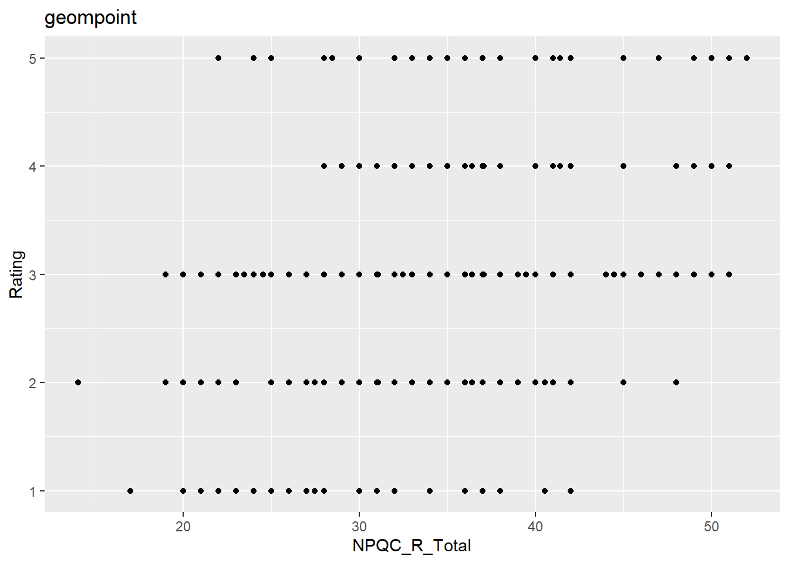
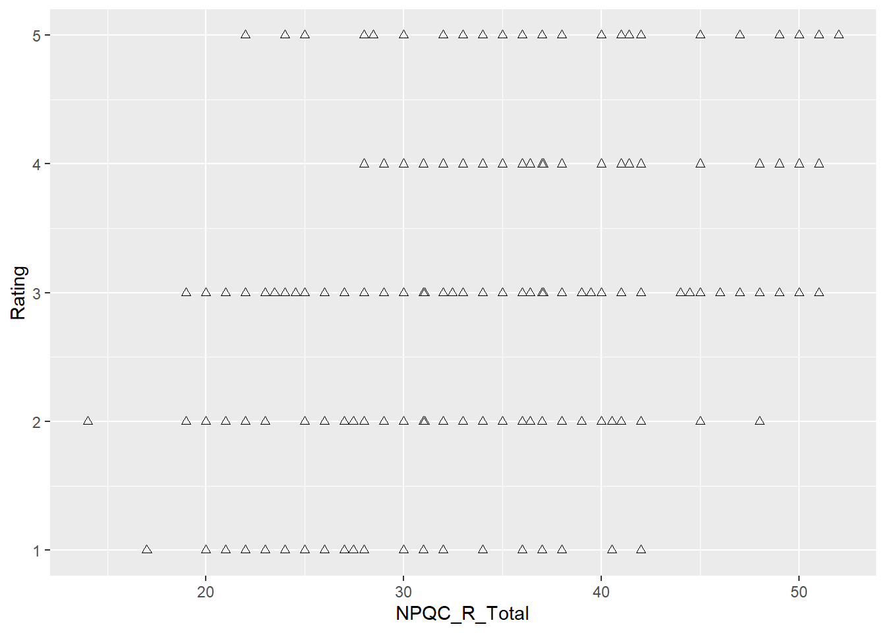
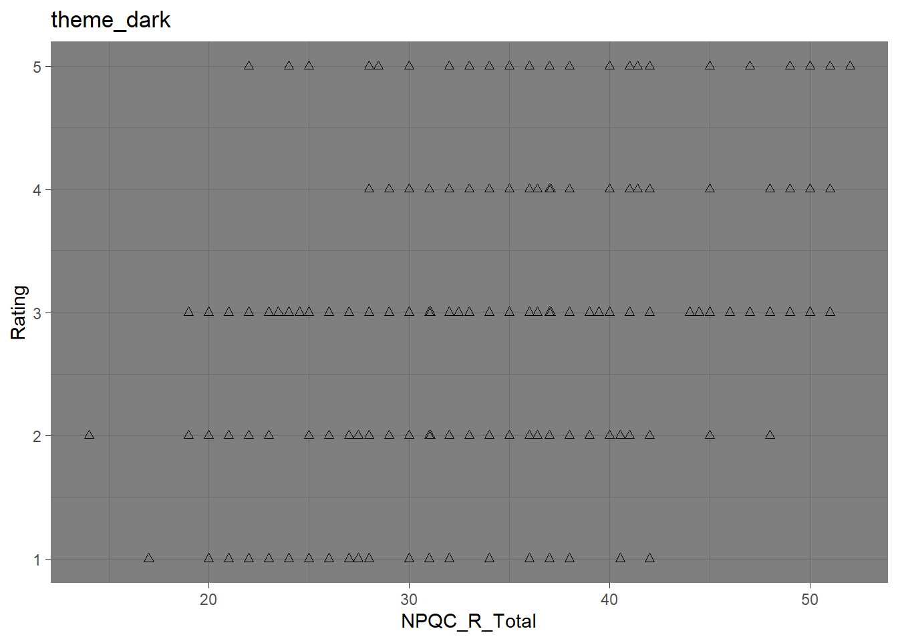
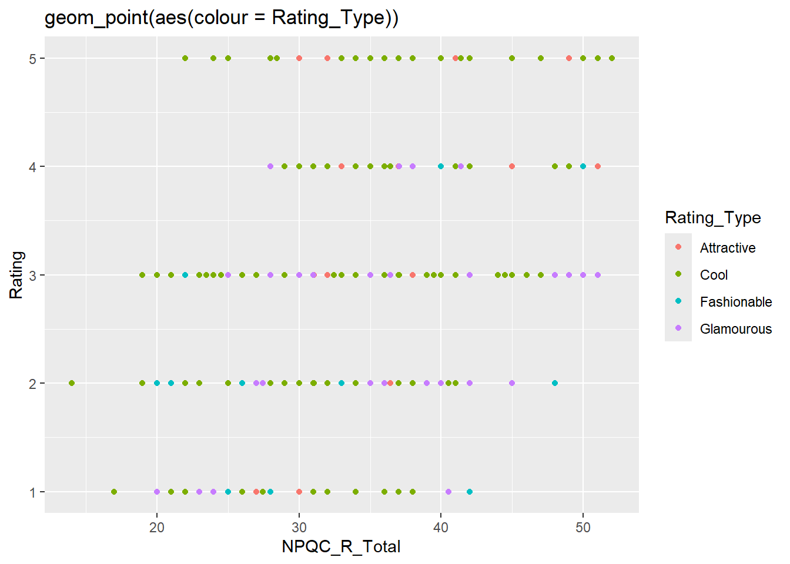
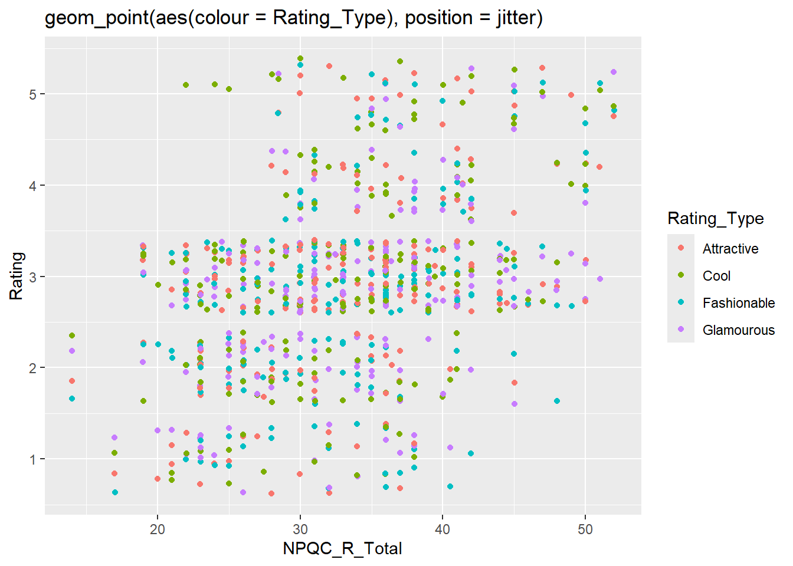

# label: install-and-load — assigns a label to the code chunk so it can be referenced later.
# message: false — suppresses messages that might appear (e.g., package startup messages).
# warning: false — suppresses warnings from appearing in the rendered document.
#| label: install-and-load
#| message: false
#| warning: false
quiet_library <- function(pkg) {
suppressMessages(suppressWarnings({
if (!requireNamespace(pkg, quietly = TRUE)) {
install.packages(pkg, quiet = TRUE)
}
library(pkg, character.only = TRUE)
}))
}
quiet_library("tidyverse") # includes ggplot2, readr, dplyr, etc.
quiet_library("readr") # explicit (for read_delim), though also in tidyverse
#Amend this to reflect your folder structure
datalocation <- file.path("./")
#On Mac this would be datalocation <- file.path("/Users", "deirdre.lawless", "datafiles")TU059/TU060/TU256/PhD PSI — Week 2: Creating Basic Plots in R
1. Install and load packages
This first bit of code installs all the packages needed to run the various functions within this file. We define a helper quiet_library() that installs (if needed) and loads a package quietly.
2. Reminder of some basics
A dataframe is a structure into which we load data from a file. It is a collection of rows and columns. We refer to the columns as variables. We can find out the names of all variables in the data frame using the names command. We can reference a particular variable using the $ symbol. R is case sensitive so it will consider the variable salary to be different to a variable Salary or SALARY.
3. Some Basics with ggplot
Using the data file facebookNarcissim that contains data from a study that looked at ratings of Facebook profile pictures which were rated (on coolness, fashion, attractiveness and glamour, each of which is assigned a number). The intent was to try to predict (by building a statistical model) how high the person in the profile picture rated on a narcissism scale.
datapath <- file.path(datalocation,'FacebookNarcissism.dat')
facebookData <- read.delim(datapath, header=TRUE)
#| label: load-data
#| message: false
#| warning: false
# Peek at columns available (uncomment if needed)
names(facebookData)[1] "id" "NPQC_R_Total" "Rating_Type" "Rating" # Peek at columns available (uncomment if needed)
library(tibble)
# facebookData <- as_tibble(facebookData)
# spec(facebookData)
facebookData <- as.data.frame(facebookData)
#spec(facebookData)
#wine_tbl <- as.data.frame(wine_tbl)
head(facebookData) id NPQC_R_Total Rating_Type Rating
1 1 31 Attractive 2
2 1 31 Fashionable 2
3 1 31 Glamourous 2
4 1 31 Cool 2
5 2 37 Attractive 2
6 2 37 Fashionable 2# spec(facebookData)3.1 Creating a basic ggplot
We are now going to step through a series of ggplot commands to create some basic plots.
First create the graph (pass the dataset to ggplot and we map the aesthetics (aes(x,y)) to use the variables for the narcissim scale total value (NPQC_R_Total) and the rating variable). Then setup to use points and a title. You can find more about aes at https://ggplot2.tidyverse.org/articles/ggplot2-specs.html
#For each rating, show the values of NPQC_R_Total appearing in the dataset
graph <- ggplot(facebookData, aes(NPQC_R_Total, Rating))
graph + geom_point() + ggtitle("geompoint")
3.2 Changing the shape used
Changes the graph to use triangles You can find the numbers to use for different shapes at this link http://www.sthda.com/english/wiki/ggplot2-point-shapes#point-shapes-in-r
graph + geom_point(shape = 2) 
3.3 Change plot to use a theme and change the title to reflect that
#using a theme theme, using Triangles
#you find more themes at https://ggplot2.tidyverse.org/reference/ggtheme.html
graph + theme_dark() + geom_point(shape = 2) + ggtitle ("theme_dark")
3.4. Change plot to us different colours for each rating type and change the title to reflect this
graph + geom_point(aes(colour = Rating_Type)) + ggtitle("geom_point(aes(colour = Rating_Type))")
3.5 Change plot to add Jitter
Jitter adds a small amount of random variation to the location of each point This spreads the data out
graph + geom_point(aes(colour = Rating_Type), position = "jitter") + ggtitle ("geom_point(aes(colour = Rating_Type), position = jitter)")
3.6 Save a plot as an image
ggsave("Week2 Example jitter.png", plot=last_plot())Saving 7 x 5 in image